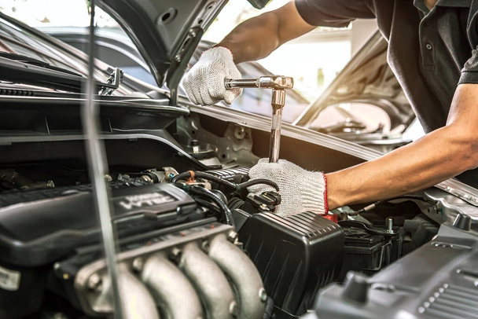
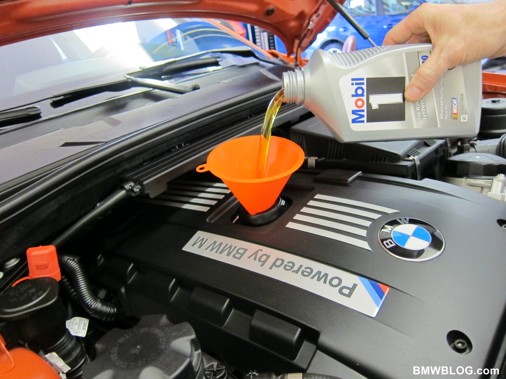

Buscamos garantizar el tratamiento de el motor en un 100%.
El trabajo realizado
Indicador de gastos donde vemos y garantizamos el perfecto trabajo del motor
Mecanico que trabajo: Juan Perez - Guilleromo Diaz
El trabajo se garantiza que se realiza en 24hrs habiles
Materiales utilizados basicos son: como elementos de mecanica basica